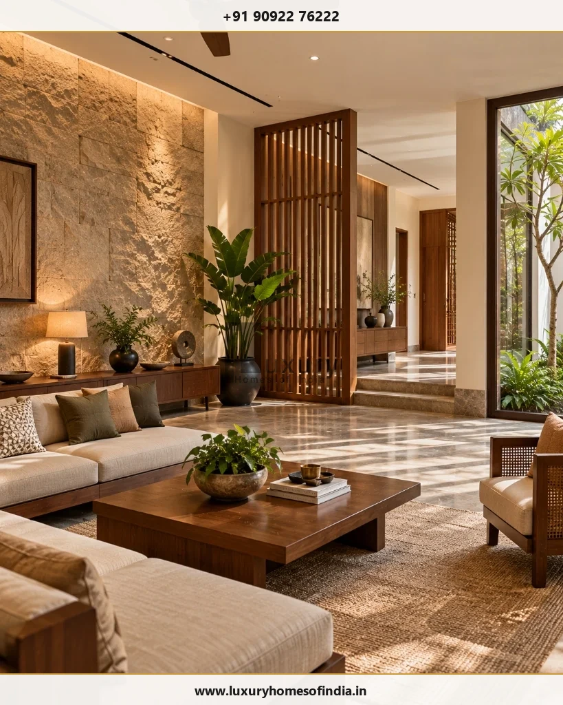
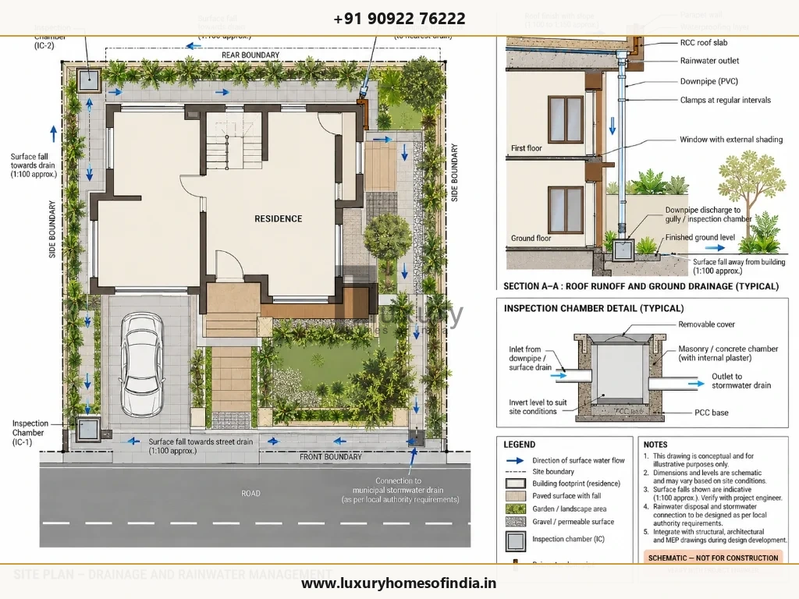

Luxury Residential Construction in Chennai: A Homeowner’s Planning Guide
A practical guide to coordinating site planning, structural engineering, MEP services, interior execution, and budgeting for bespoke luxury homes.
Executive Summary: Homeowner's Construction Guide
Planning luxury residential construction in Chennai requires a coordinated approach bridging site microclimate analysis, structural RCC engineering, MEP service integration, realistic budgeting, and quality control. Rather than treating construction as separate fragmented stages, Luxury Homes of India unifies architectural planning, civil engineering, turnkey villa construction, and luxury interior execution under one master agreement.
Planning Luxury Residential Construction in Chennai
Planning luxury residential construction in Chennai involves far more than selecting an architectural elevation or picking high-end surface finishes. It requires a synchronized approach to site analysis, architectural space planning, structural engineering, interior execution, building services, and civil execution.
Before committing to a residential construction partner, establish the exact scope of work, design responsibilities, budget assumptions, approval requirements, and quality-control procedures. Resolving these decisions early helps you evaluate proposals accurately and eliminate costly changes during site execution.

1. Start with the Plot, Not the Elevation
A striking elevation is only one aspect of a successful home. The physical site directly influences building footprints, circulation paths, natural daylight, privacy boundaries, car parking, outdoor gardens, and construction logistics.
Before finalizing concept drawings, collect these essential site parameters:
- Plot Dimensions & Boundaries: Obtain certified site survey measurements to verify exact property boundaries.
- Site Levels & Road Relationships: Evaluate how plot levels relate to street access, drainage lines, and finished floor levels.
- Access & Parking Logistics: Plan vehicle turning radii, guest parking space, and construction vehicle material delivery routes.
- Solar Orientation & Microclimate: Study solar angles, wind paths, and facade shading requirements to reduce heat gain.
- Neighboring Context & Privacy: Position bedrooms, master suites, and family courtyards to prevent overlooking from adjacent plots.
- Municipal Drainage & Utilities: Identify stormwater connection points, municipal water lines, and sub-surface drainage discharge routes.
- Local Authority Development Rules: Verify setback requirements, Floor Space Index (FSI), and CMDA/DTCP approval parameters.
2. Design Around Your Family's Daily Routines
Luxury residential design succeeds when space layouts reflect how your household actually lives. A family that entertains frequently requires open-plan formal lounges and show kitchens, whereas a multi-generational family needs distinct private suites and barrier-free circulation.
Family Lifestyle Planning Matrix
| Planning Area | Questions to Resolve | Architectural & Engineering Solution |
|---|---|---|
| Living & Dining | How will family activities, guests, and circulation interact? | Zoned formal vs. informal lounges, sliding glass terrace transitions. |
| Bedrooms | What privacy, storage, and acoustic separation are needed? | Sound-insulated partition walls, walk-in dressing suites, private balconies. |
| Kitchen & Utility | Which appliances, ventilation, and service doors are required? | Dual show kitchen and wet kitchen layout, dedicated service access door. |
| Workspaces | What lighting, electrical capacity, and privacy will support work? | Acoustically isolated study rooms with dedicated high-speed network ports. |
| Bathrooms | How should fittings, drainage, and waterproofing be coordinated? | Dual-membrane waterproofing, concealed thermostatic valves, inspection traps. |

3. Coordinate Architecture, Structure, and Services
A luxury residence is an interconnected technical system. Architectural decisions dictate structural column placements, while plumbing stacks, electrical conduits, and HVAC ducting require dedicated ceiling drops and wall chases.
A double-height living volume, for example, demands coordinated structural slab design, acoustic wall treatments, motorized upper window blinds, and high-capacity air-conditioning calculation.

4. Address Chennai's Site and Climate Considerations Early
Building a luxury residence in Chennai demands specialized engineering defenses against coastal heat, high humidity, corrosive sea breeze, and intense monsoon downpours.

5. Build a Realistic Residential Budget
The cost of luxury residential construction depends on plot soil conditions, structural spans, material specifications, interior joinery customization, and MEP automation levels. Square footage rates alone fail to reflect project complexity.
Comprehensive Residential Construction Budget Breakdown
| Budget Category | What to Establish | Scope & Deliverables Covered |
|---|---|---|
| Site Prep & Survey | Surveys, soil testing, excavation | Boundary survey, soil load capacity test, site clearing, anti-termite dosing. |
| Design & Engineering | Architectural, structural, MEP fees | Full working drawings, structural calculations, 3D renders, site visits. |
| Civil Structure | Foundations, RCC frame, blockwork | M30 grade concrete, Fe550D TMT rebar steel, AAC/solid block masonry. |
| MEP Building Services | Electrical, plumbing, HVAC, solar | CPVC/UPVC pipes, FFR wiring, VRV/VRF air conditioning, solar provisions. |
| Luxury Interiors | Flooring, kitchens, wardrobes, lighting | Imported marble/granite, modular teak kitchens, bespoke wardrobes, false ceilings. |
| External & Landscape | Gates, paving, drainage, garden | Compound wall, motor gates, rainwater harvesting sumps, outdoor pavers. |

6. Practical Checklist Before Starting Construction
- Confirm plot boundaries, survey dimensions, and soil load-bearing capacity.
- Document family space requirements, daily routines, and Vastu priorities.
- Develop coordinated architectural, RCC structural, and MEP service drawings.
- Define itemized material specifications, brand schedules, and sample approvals.
- Establish a transparent budget with explicit inclusions, exclusions, and contingency allowances.
- Agree on quality-control inspection milestones, rebar testing, and waterproofing water-ponding tests.
- Finalize contract terms for change-order management, milestone payments, and handover checklists.
Discuss Your Residential Project With Luxury Homes of India
Bring your plot details, lifestyle brief, and budget parameters. Speak with our principal architects and civil engineers today.